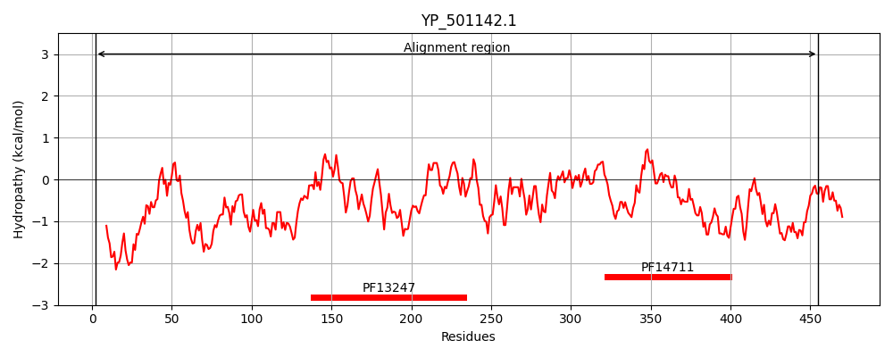
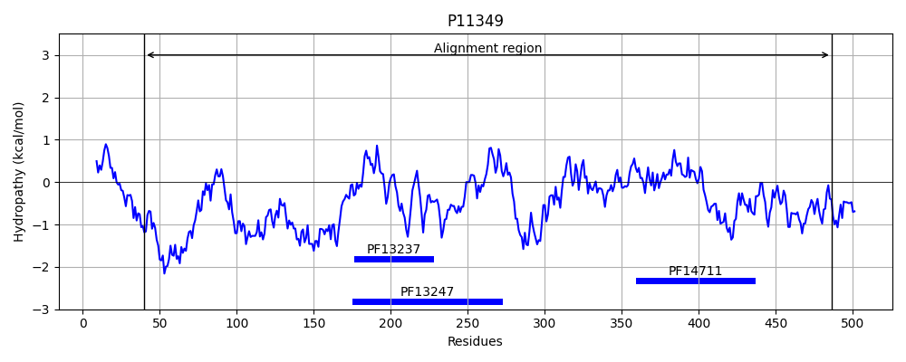
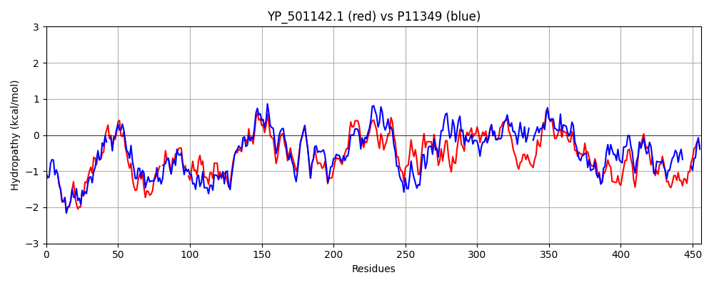

Hit Accession: P11349
Hit TCID: 5.A.3.1.1
Hit Description: gnl|BL_ORD_ID|9032 gnl|TC-DB|P11349|5.A.3.1.1 Respiratory nitrate reductase 1 beta chain (EC 1.7.99.4) - Escherichia coli.
Mach Len: 456
e:0.000000
Query TMS Count : 0
Hit TMS Count: 0
TMS-Overlap Score: 0.000000
Predicted Substrates:CHEBI:10545;electron
BLAST Alignment:
Score: 1455 , Bit scores: 565 bits, E-value: 0.0e+00, Alignment length: 456, Percentage identity: 59
Query: 2 WFNNVETKPGVGYPKRWEDQEHYKGGWVLNRKGKLELKSGSRISKIALGKIFYNPDMPLIKDYYEPWNYNYEHLTTAKSG-KHSPVARAYSEITGDNI-EIEWGPNWEDDLAGGHVTGPKDPNIQKIEEDIKFQFDETFMMYLPRLCEHCLNPSCVASCPSGAMYKRDEDGIVLVDQDACRGWRYCMTGCPYKKVYFNWKTNKAEKCTFCFPRIEAGMPTVCSETCTGRMRYLGVLLYDADRVHEAASAVDEKDLYEKQLDIFLNPFDEEVIAQAEKDGIGYDWIEAAQNSPIYKLAIEYKLAFPLHPEFRTMPMVWYCPPLSPIMSYFEGKNTTQNPDAIFPAIEEMRLPIEYLANIFTAGDTEPVKGALQRMAMMRSYMRSQVTQQPFDTSRLERLGITERQTKDMYRLLGLAKYEDRFVIPTSHKETYLDTYHAQGSTGYNYGGEHFGDNCEG 455
WFNNVETKPG G+P WE+QE YKGGW+ GKL+ + G+R + LGKIF NP +P I DYYEP++++Y++L TA G K P+AR S ITG+ + +IE GPNWEDDL G KD N I++ + QF+ TFMMYLPRLCEHCLNP+CVA+CPSGA+YKR+EDGIVL+DQD CRGWR C+TGCPYKK+YFNWK+ K+EKC FC+PRIEAG PTVCSETC GR+RYLGVLLYDAD + AAS +EKDLY++QLD+FL+P D +VI QA KDGI IEAAQ SP+YK+A+E+KLA PLHPE+RT+PMVWY PPLSPI S + N I P +E +R+P++YLAN+ TAGDT+PV AL+RM MR Y R++ DT LE +G+TE Q ++MYR L +A YEDRFV+P+SH+E + + + G+ FGD C G
Sbjct: 40 WFNNVETKPGQGFPTDWENQEKYKGGWIRKINGKLQPRMGNRA--MLLGKIFANPHLPGIDDYYEPFDFDYQNLHTAPEGSKSQPIARPRSLITGERMAKIEKGPNWEDDLGGEFDKLAKDKNFDNIQKAMYSQFENTFMMYLPRLCEHCLNPACVATCPSGAIYKREEDGIVLIDQDKCRGWRMCITGCPYKKIYFNWKSGKSEKCIFCYPRIEAGQPTVCSETCVGRIRYLGVLLYDADAIERAASTENEKDLYQRQLDVFLDPNDPKVIEQAIKDGIPLSVIEAAQQSPVYKMAMEWKLALPLHPEYRTLPMVWYVPPLSPIQSAADAGELGSN--GILPDVESLRIPVQYLANLLTAGDTKPVLRALKRMLAMRHYKRAETVDGKVDTRALEEVGLTEAQAQEMYRYLAIANYEDRFVVPSSHRELAREAFPEKNGCGFT-----FGDGCHG 486 | Protein Hydropathy Plots: |
|---|
|  |  |
Pairwise Alignment-Hydropathy Plot:
|
|---|
|  |